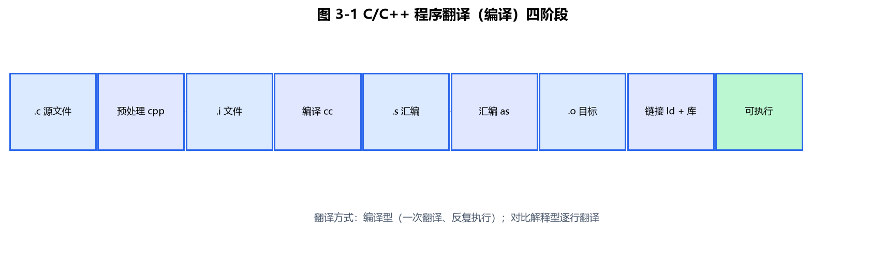
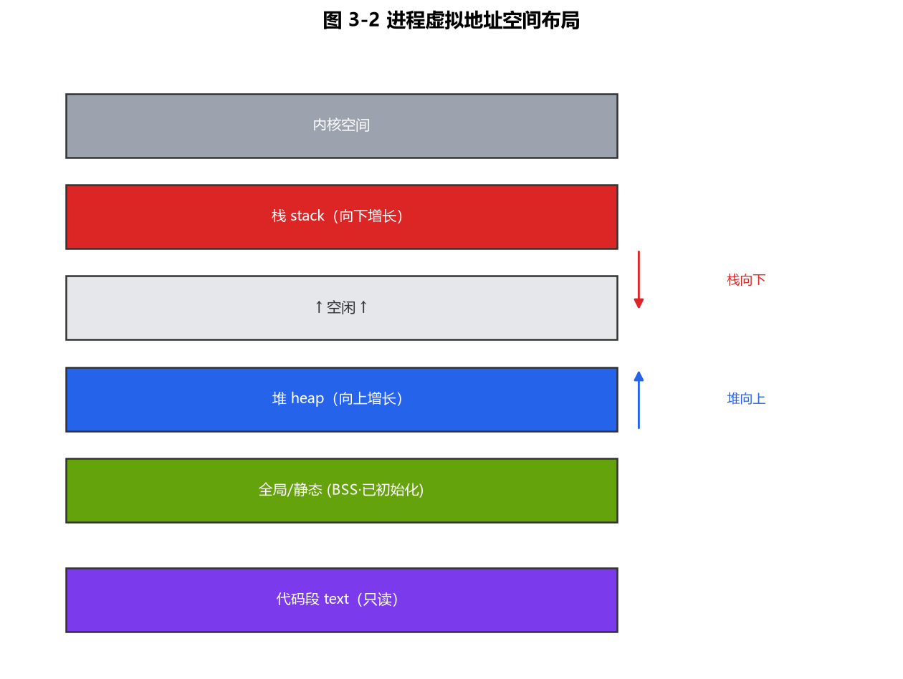

第3章 计算机软件和计算机语言
本章定位（CSP-S）：在 CSP-J "会写 C++ 基础语法"的基础上，理解语言是怎么变成可执行程序的（编译/解释/汇编）、C++ 的引用/指针与内存布局、常用 STL 容器的底层与复杂度、以及 软件工程与复杂度权衡 的基本思想。初赛常考翻译方式辨析、语言分类、复杂度估算；复赛虽不考名词，但"选对容器/算对复杂度"直接决定你的程序能不能过。
3.1 程序设计语言分类与翻译方式
3.1.1 语言分类
| 类别 | 说明 | 例子 |
|---|---|---|
| 机器语言 | 直接用 0/1 表示，CPU 可直接执行 | 无可读性 |
| 汇编语言 | 用助记符代替机器码，需汇编 | MOV AX, 1 |
| 高级语言 | 接近人类表达，需翻译 | C / C++ / Java / Python |
易错点：机器语言和汇编语言都依赖具体硬件（CPU 指令集），可移植性差；高级语言相对硬件无关，可移植性好。
3.1.2 三种翻译方式
| 方式 | 过程 | 特点 | 代表 |
|---|---|---|---|
| 编译 Compile | 一次性把源程序译成机器码目标程序 | 执行快、需重新编译才能跨平台 | C / C++ / Go |
| 解释 Interpret | 边翻译边执行，逐句翻译 | 跨平台好、执行慢、报错早 | Python / JavaScript |
| 汇编 Assemble | 汇编语言 → 机器语言 | 一一对应 | 汇编器 |
3.1.3 C/C++ 程序的编译四阶段
一个 C++ 源文件变成可执行文件，通常经过：
源文件(.cpp) → 预处理(#include/#define展开) → 编译(生成汇编)
→ 汇编(生成机器码目标文件 .o) → 链接(合并库, 生成可执行文件)
示例（GCC/Clang 命令）
g++ -E main.cpp -o main.i # 1. 预处理：展开头文件与宏
g++ -S main.i -o main.s # 2. 编译：生成汇编代码
g++ -c main.s -o main.o # 3. 汇编：生成目标文件
g++ main.o -o main # 4. 链接：生成可执行文件 main
竞赛提示：你用
g++ -std=c++17 -O2 main.cpp -o main一步完成，但底层仍是这四个阶段。-O2是优化级别，评测机通常开启。

图 3-1：C/C++ 源文件从预处理、编译、汇编到链接，最终生成可执行文件。
3.2 C++ 语言深入（CSP-S 深化）
3.2.1 引用 vs 指针
| 对比 | 引用 reference | 指针 pointer |
|---|---|---|
| 本质 | 变量的"别名" | 存放地址的变量 |
| 初始化 | 必须定义时初始化 | 可先定义后赋值 |
| 空值 | 不能为 null | 可为 nullptr |
| 重绑定 | 一旦绑定不可改指别处 | 可随时改指别处 |
示例：引用传参实现交换（C++17）
#include <iostream>
using namespace std;
void swap(int& a, int& b) { // 引用传参：直接修改原变量
int t = a; a = b; b = t;
}
int main() {
int x = 3, y = 5;
swap(x, y);
cout << x << " " << y << "\n"; // 输出 5 3
return 0;
}
易错点：函数参数用
int& a才能修改实参；用int a只是值拷贝，交换不影响外部。复赛中大量函数（如 DFS 改全局状态）靠引用/全局变量避免拷贝开销。
3.2.2 程序的内存布局
一个 C++ 程序运行时，内存大致分为几块：
| 区域 | 存放内容 | 生长方向 |
|---|---|---|
| 代码段 | 程序的机器指令 | — |
| 数据段 | 全局变量、static 变量 | — |
| 堆 heap | new/malloc 动态分配 | 向上（高地址） |
| 栈 stack | 局部变量、函数参数、返回地址 | 向下（低地址） |
| 常量区 | 字符串常量、const 全局 | — |

图 3-2：进程虚拟地址空间——栈向低地址增长，堆向高地址增长，中间是未分配区域。
示例：打印不同变量的地址，直观看到区域分布（C++17）
#include <iostream>
using namespace std;
int g = 10; // 全局变量 → 数据段
int main() {
int a = 1; // 局部变量 → 栈
int* p = new int(2); // new 分配 → 堆
static int s = 3; // 静态变量 → 数据段
cout << "栈变量 a: " << &a << "\n";
cout << "堆变量 *p: " << p << "\n";
cout << "全局 g: " << &g << "\n";
cout << "静态 s: " << &s << "\n";
delete p;
return 0;
}
易错点：栈空间有限（一般几 MB），递归过深或开超大局部数组会"栈溢出"；超大数组应开成全局（数据段）或用
vector/new（堆）。复赛里"爆栈"常因递归深度过大或局部大数组。
3.3 常用 STL 容器与算法（结合真题示例）
STL（标准模板库）是 C++ 竞赛的核心工具。下表给出高频容器的典型操作与复杂度：
| 容器 | 底层 | 典型操作 | 复杂度 |
|---|---|---|---|
vector | 动态数组 | 随机访问、push_back | 访问 O(1)，尾部插入均摊 O(1) |
set / map | 红黑树（有序） | 插入/查找/删除、lower_bound | O(log n) |
unordered_set / unordered_map | 哈希表 | 插入/查找/删除 | 平均 O(1)，最坏 O(n) |
priority_queue | 堆 | top / push / pop | O(log n) |
sort | 快速排序变体 | 区间排序 | O(n log n) |
lower_bound / upper_bound | 二分 | 在有序区间找位置 | O(log n) |
下面每个知识点配一个真题/教学示例（真题指洛谷等公开题库中的代表性题目，代码已做教学简化，重点在 STL 用法）。
3.3.1 vector：动态数组与邻接表（图论基础）
vector 最常用来存变长数组、读入数据，以及建图（邻接表）。图是后续第9章核心，这里先打基础。
真题背景：几乎所有图论题（最短路、树上问题）都用 vector 邻接表存图。
#include <iostream>
#include <vector>
using namespace std;
int main() {
// 无向图：5 个点，用邻接表 g[u] 存 u 的所有邻居
vector<vector<int>> g(6); // 点编号 1~5（下标 0 弃用）
int edges[6][2] = {{1,2},{1,3},{2,4},{3,4},{4,5},{2,5}};
for (auto& e : edges) {
int u = e[0], v = e[1];
g[u].push_back(v);
g[v].push_back(u);
}
cout << "点1的邻居: ";
for (int v : g[1]) cout << v << " "; // 输出 2 3
cout << "\n";
return 0;
}
要点：
vector随机访问 O(1)，尾部push_back均摊 O(1)；二维vector<vector<int>>是建图标准写法。
3.3.2 set / map：有序去重与计数
set：自动去重 + 升序，常用于"统计有多少不同元素"。map：键→值映射，常用于"统计每个元素出现次数"。
真题背景：洛谷 P1059《明明的随机数》——去重并升序输出（用 set 一行搞定）；计数类题常用 map。
#include <iostream>
#include <set>
#include <map>
using namespace std;
int main() {
// (1) set 去重 + 升序
set<int> s;
for (int x : {3, 1, 3, 2, 1, 2}) s.insert(x);
cout << "不同数字个数: " << s.size() << "\n"; // 3
for (int x : s) cout << x << " "; // 1 2 3
cout << "\n";
// (2) map 计数
map<int, int> cnt;
for (int x : {1, 2, 2, 3, 3, 3}) cnt[x]++;
for (auto& kv : cnt)
cout << "数字 " << kv.first << " 出现 " << kv.second << " 次\n";
// 输出: 数字 1 出现 1 次 / 数字 2 出现 2 次 / 数字 3 出现 3 次
return 0;
}
要点：
set/map底层红黑树，插入/查找/删除 O(log n)，且元素有序（可顺序遍历）；s.size()即不同元素个数。
3.3.3 unordered_set / unordered_map：哈希，平均 O(1)
哈希容器不保序，但平均操作 O(1)，数据量大且不需要有序时比 map 更快。
真题背景：判重/查存在类题目（如"数组中是否有重复元素"），用 unordered_set 一遍扫描即可。
#include <iostream>
#include <unordered_set>
#include <vector>
using namespace std;
int main() {
vector<int> a = {1, 2, 3, 4, 2};
unordered_set<int> seen;
bool dup = false;
for (int x : a) {
if (seen.count(x)) { dup = true; break; } // 平均 O(1) 判重
seen.insert(x);
}
cout << "是否存在重复: " << (dup ? "是" : "否") << "\n"; // 是
return 0;
}
要点：哈希容器平均 O(1)、最坏 O(n)（大量冲突时退化）；若需有序或担心被卡，改用
map或手写哈希。两数之和的 O(n) 写法见 3.6。
3.3.4 priority_queue：堆（合并果子）
priority_queue 默认是大顶堆；需要小顶堆时加 greater<int>。常用于"每次取最大/最小"。
真题背景：洛谷 P1090《合并果子》——每次合并最小的两堆，使总代价最小（哈夫曼树），用小顶堆每次取最小两堆。
#include <iostream>
#include <queue>
#include <vector>
using namespace std;
int main() {
priority_queue<int, vector<int>, greater<int>> pq; // 小顶堆
for (int x : {3, 2, 5, 4, 1}) pq.push(x);
int cost = 0;
while (pq.size() > 1) {
int a = pq.top(); pq.pop(); // 最小
int b = pq.top(); pq.pop(); // 次小
cost += a + b; // 合并这两堆的代价
pq.push(a + b); // 新堆放回
}
cout << "最小总代价: " << cost << "\n"; // 33
return 0;
}
要点：每次
top/push/pop都 O(log n)；合并果子总代价 = 所有内部节点权值和，小顶堆保证"局部最优=全局最优"。
3.3.5 sort：区间排序与自定义比较器
sort 默认升序；传 lambda 可定义多关键字比较（返回 true 表示"前者应排在前"）。
真题背景：洛谷 P1104《生日》——按出生日期排序，同年月日按学号升序（多关键字排序典型题）。
#include <iostream>
#include <vector>
#include <algorithm>
using namespace std;
struct Stu { int id, score; };
int main() {
vector<Stu> v = {{3, 90}, {1, 90}, {2, 85}};
sort(v.begin(), v.end(), [](const Stu& a, const Stu& b) {
if (a.score != b.score) return a.score > b.score; // 分数降序
return a.id < b.id; // 同分学号升序
});
for (auto& s : v)
cout << "id=" << s.id << " score=" << s.score << "\n";
// 输出: id=3 score=90 / id=1 score=90 / id=2 score=85
return 0;
}
要点：
sort是 O(n log n)；比较器必须定义严格弱序（满足"小于"语义，且a<b与b<a不能同时为真），否则行为未定义。
3.3.6 lower_bound / upper_bound：有序区间二分
二者都要求区间已排序：
lower_bound：返回第一个 >= x 的位置。upper_bound：返回第一个 > x 的位置。- 二者相减 = 等于 x 的元素个数（O(log n) 定位 + O(1) 计数）。
真题背景：洛谷 P1678《烦恼的高考志愿》等"在有序数组中找最近/边界"的题，都用二分定位。
#include <iostream>
#include <vector>
#include <algorithm>
using namespace std;
int main() {
vector<int> a = {1, 2, 2, 2, 3, 5, 5, 8};
sort(a.begin(), a.end()); // 必须先排序
int x = 2;
auto L = lower_bound(a.begin(), a.end(), x); // 第一个 >= 2
auto R = upper_bound(a.begin(), a.end(), x); // 第一个 > 2
cout << "等于 " << x << " 的个数: " << (R - L) << "\n"; // 3
cout << "第一个 >= 5 的下标: "
<< (lower_bound(a.begin(), a.end(), 5) - a.begin()) << "\n"; // 5
return 0;
}
竞赛提示：
lower_bound/upper_bound要求区间已排序，否则结果无意义；定位是 O(log n)，比手写二分更不易写错、不易越界。
3.4 STL 底层原理与复杂度权衡
3.4.1 vector 的倍增与均摊分析
vector 底层是连续数组。当 size == capacity 时，会重新分配约 2 倍容量并把旧元素拷贝过去，再插入。
均摊复杂度：n 次 push_back，拷贝总次数约为 n + n/2 + n/4 + … ≈ 2n，所以单次 push_back 的均摊代价是 O(1)，不是 O(n)。
3.4.2 set/map 的红黑树
set/map 底层是红黑树（一种自平衡二叉搜索树），保证有序，插入/删除/查找均为 O(log n)。代价是每次操作有树的旋转开销，且元素是排好序的（可遍历得到升序）。
3.4.3 哈希容器
unordered_map 底层是开散列哈希表，平均 O(1)。注意：
- 需要元素可计算哈希（内置类型已支持）。
- 最坏情况（大量冲突）退化到 O(n)。
- 元素无序。
3.5 软件工程基础（初赛常识）
3.5.1 软件开发模型
| 模型 | 特点 | 适用 |
|---|---|---|
| 瀑布模型 | 线性阶段，上一阶段完成才进下一阶段 | 需求稳定的传统项目 |
| 迭代/增量 | 先出核心再逐步完善 | 需求渐明 |
| 螺旋模型 | 每轮带风险分析 | 大型高风险 |
| 敏捷 Agile | 小步快跑、持续交付、重测试 | 互联网/竞赛工具 |
3.5.2 测试与调试
- 黑盒测试：只测功能（不看内部），如按样例验证。
- 白盒测试：看内部逻辑，设计覆盖分支的用例。
- 单元测试：对最小函数验证正确性。
- 调试手段：断点、单步、打印变量、断言
assert。
示例：用 assert 做最小单元测试（C++17）
#include <iostream>
#include <cassert>
using namespace std;
int add(int a, int b) { return a + b; }
int main() {
assert(add(2, 3) == 5); // 单元测试：断言
assert(add(-1, 1) == 0);
cout << "全部测试通过\n";
return 0;
}
竞赛提示：复赛时你也可以在本地用
assert/对拍脚本验证自己的程序；但提交到评测机时通常要去掉assert（或在 Release 下它可能被优化掉）。
3.6 复杂度在代码实现中的权衡
同一问题，选不同数据结构/算法，复杂度天差地别。典型例子：两数之和（给定数组，是否存在两数相加等于 target）。
- 暴力：两重循环枚举所有配对，O(n²)。
- 哈希：用
unordered_map记录已见数，每步查target - x是否出现过，O(n)，但多花 O(n) 空间。
这就是"用空间换时间"。
示例：两数之和的两种写法（C++17）
#include <iostream>
#include <vector>
#include <unordered_map>
using namespace std;
// 方法1：暴力 O(n^2)
bool twoSumBrute(const vector<int>& a, int target) {
for (size_t i = 0; i < a.size(); ++i)
for (size_t j = i + 1; j < a.size(); ++j)
if (a[i] + a[j] == target) return true;
return false;
}
// 方法2：哈希 O(n)，多花 O(n) 空间
bool twoSumHash(const vector<int>& a, int target) {
unordered_map<int, int> seen;
for (int x : a) {
if (seen.count(target - x)) return true; // 之前见过补数
seen[x] = 1;
}
return false;
}
int main() {
vector<int> a = {2, 7, 11, 15};
cout << "暴力: " << twoSumBrute(a, 9) << "\n"; // 1 (true, 2+7)
cout << "哈希: " << twoSumHash(a, 9) << "\n"; // 1
return 0;
}
易错点：CSP-S 复赛数据规模常到 n = 10⁵ 甚至更大。O(n²) 在 n = 10⁵ 时约 10¹⁰ 次运算，1 秒跑不完；此时必须想 O(n log n) 或 O(n) 的解法。先估复杂度再写代码是竞赛基本功。
3.7 本章小结（CSP-S 考查要点）
- 翻译方式：编译（C/C++）一次性生成机器码、执行快；解释（Python）边翻边跑、跨平台；汇编专用于汇编语言。
- C++ 深入：引用是别名（必初始化、不可改指），指针存地址（可重指）；栈空间有限，大数组/深递归要防"爆栈"。
- STL：
vector连续数组均摊 O(1) 尾部插入；set/map红黑树 O(log n) 有序；unordered_*哈希平均 O(1) 无序；priority_queue堆；sortO(n log n)；lower_bound需有序区间。 - 软件工程：瀑布/迭代/敏捷模型；黑盒 vs 白盒；用
assert/对拍自测。 - 复杂度权衡：选对容器与算法（如两数之和 O(n²)→O(n)），先估复杂度再写。
随堂检测（CSP-S 风格）
提示：每道题下方都有「参考答案」折叠块，点击即可展开答案与解析。
-
（单选）C++ 源程序从编写到运行，通常不经历的阶段是（ ）
- A. 编译
- B. 汇编
- C. 解释
- D. 链接
参考答案
答案：C
解析（考点）：C++ 是编译型语言，过程为 预处理→编译→汇编→链接，没有"解释"阶段；解释是 Python/JS 等解释型语言的特征。
-
（单选）以下关于引用和指针的说法，正确的是（ ）
- A. 引用可以为 nullptr
- B. 指针必须定义时初始化
- C. 引用是变量的别名，一旦绑定不可改指别处
- D. 引用和指针完全等价
参考答案
答案：C
解析（考点）：引用是别名，必须初始化且绑定后不可改指；指针可为 nullptr、可重指。二者不等价（引用更安全、无空引用风险）。
-
（单选）
std::map<int,int>的插入、查找、删除操作平均复杂度是（ ）- A. O(1)
- B. O(log n)
- C. O(n)
- D. O(n log n)
参考答案
答案：B
解析（考点）：
map底层是红黑树（自平衡 BST），保持有序，插入/查找/删除均为 O(log n)；O(1) 是unordered_map的"平均"情况，且无序。 -
（单选）对 n 个元素的
vector连续做 n 次push_back，单次插入的均摊复杂度是（ ）- A. O(1)
- B. O(log n)
- C. O(n)
- D. O(n²)
参考答案
答案：A
解析（考点）：
vector满时按约 2 倍扩容并拷贝，n 次总拷贝 ≈ 2n，故单次均摊 O(1)。这是"均摊分析"的经典结论（与第10章呼应）。 -
（多选）下列关于程序内存布局的说法，正确的有（ ）
- A. 局部变量通常放在栈上
- B.
new分配的内存位于堆上 - C. 全局变量放在数据段
- D. 栈空间一般比堆大得多
参考答案
答案：A、B、C
解析（考点）：局部变量在栈、new 在堆、全局/static 在数据段，均正确；栈空间通常较小（几 MB），远小于堆，深递归或大局部数组易"爆栈"，故 D 错。
-
（单选）给定 n = 10⁵ 的数组，判断是否存在两数之和等于 target。若用暴力两重循环，约需多少次运算（量级）？（ ）
- A. 约 10⁵
- B. 约 10⁸
- C. 约 10¹⁰
- D. 约 10¹⁵
参考答案
答案：C
解析（考点）：暴力 O(n²) = (10⁵)² = 10¹⁰ 次，1 秒内跑不完；必须改用哈希 O(n) 或排序+双指针 O(n log n)。先估复杂度是竞赛基本功。